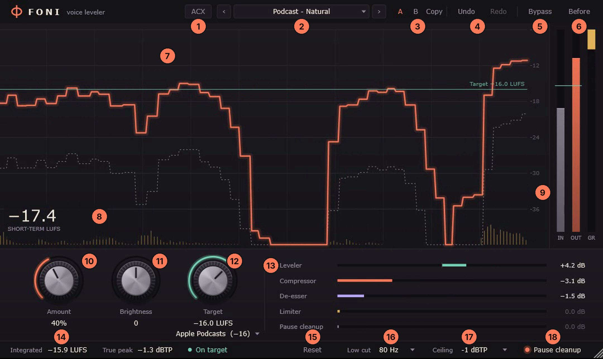

FONI user guide
Every knob, button and meter, in the order you meet them. If you only read one line: put FONI on the voice track, pick a preset, choose where you publish under Target, and press play.

Top bar
- ACX
Switches the bottom bar to an audiobook check: RMS, Peak and Noise floor of FONI's output since the last Reset, each marked ok, low or high against the ACX limits (RMS −23 to −18 dB, peak below −3 dB, noise floor below −60 dB). After 10 seconds of audio it says in range or out of range, and if the RMS is off it tells you which Target to set. Turns on by itself with the Audiobook preset. Still confirm the exported file with ACX Check; see the ACX guide.
- Presets
Nine starting points: Podcast – Natural, Podcast – Radio Voice, YouTube Voiceover, Interview Guest / Remote, Live Stream, Audiobook (ACX-style), Broadcast (EBU R128), Deep Voice – Clarity, Gentle Touch. The arrows step through them. A preset only sets the knobs and switches; change anything afterwards.
- A / B / Copy
Two complete sets of settings you can flip between to compare. Copy copies the current one to the other slot. Both are saved with your project.
- Undo / Redo
Steps back and forward through your changes.
- Bypass
Plays the original signal, latency-compensated and with a short crossfade, so there are no clicks. FONI keeps listening while bypassed, so it is ready when you switch back.
- Before
Plays the original at the same loudness as FONI's output. Bypass is usually quieter, and louder always sounds "better", so this is the fair way to judge what FONI does. The display shows how much the original is being raised (for example +8.1 dB). Listening aid only: it is not saved and does not affect your export.
Display
- Loudness history
The last 11 seconds. The orange line is FONI's output and the dotted line is the input, both as momentary loudness (400 ms). The green line is your Target. The thin ticks along the bottom show gain reduction from the compressor, de-esser and limiter. When FONI is working well the orange line hugs the target while the dotted line wanders.
- Short-term LUFS
The output loudness over the last 3 seconds, the number most loudness meters show while you play.
- IN · OUT · GR meters
Input and output loudness with a short peak hold, plus total gain reduction. The thin green line across the IN and OUT meters is the Target.
Main controls
- Amount
How much FONI does. The leveler, compressor, de-esser and noise cleanup all move together: at 0% FONI levels gently (up to ±6 dB) with light compression; at 100% it rides the voice up to ±18 dB, compresses firmly and turns room noise down further.
Start around 40–50% and adjust by ear. Raise it for uneven speakers or remote guests, lower it for performances you want to keep dynamic.
- Brightness
Presence (around 4 kHz) and air (above 10 kHz). Turn right for a clearer, more forward voice; left for a warmer, softer one. The de-esser follows, so brighter settings also tame more S sounds.
- Target and platform
The loudness FONI brings the output to, in LUFS. Pick where you publish from the list below the knob: Apple Podcasts −16, YouTube / Spotify −14, Speech (AES) −18, Broadcast (EBU) −23. Any other value shows as Custom. Double-click the knob to return to −16.
FONI needs about a minute of speech to settle exactly on the target. See which LUFS to use.
- Activity rows
What each stage is doing right now, in dB:
Leveler: slow gain riding, lifting quiet passages and lowering loud ones (green, can go both ways).
Compressor: evens out syllables and gives the voice body.
De-esser: softens harsh S, SH and T sounds.
Limiter: true-peak limiter that keeps peaks under the Ceiling.
Noise cleanup: how much room noise is being turned down.
Bottom bar
- Integrated · True peak · status
Integrated is the loudness of everything played since the last Reset, the figure platforms measure. True peak is the highest peak, including peaks between samples; it turns red if it goes above the Ceiling. The status reads Listening, On target (within ±1 LU), Below target or Above target. With ACX on, this area shows the ACX readings instead.
- Reset
Starts the integrated loudness, true peak and ACX readings again. Press it before playing the part you want to measure.
- Low cut
Removes rumble, handling noise and desk thumps below 60, 80, 100 or 120 Hz, or Off. 80 Hz suits most voices; use 100–120 Hz for boomy rooms or close-up mics.
- Ceiling
The maximum true peak: −1 dBTP for podcasts and streaming, −3 dBTP for audiobooks (ACX).
- Noise cleanup
Turns down steady room noise, hiss and hum, between phrases and under the voice, so they are not pushed up along with it. Amount sets how deep it goes. Leave it off in a quiet room. (Called Pause cleanup before 0.9.5.)
Noise cleanup and the look-ahead limiter delay the sound by about 25 ms at 48 kHz. DAWs compensate for this automatically; for live use see the OBS guide.
Good to know
Where to put it: on the voice track, after any noise reduction and before music or effects. One instance per voice works best for interviews.
Latency: 3 ms (the limiter's look-ahead). FONI reports it to your app, which compensates automatically.
Window size: drag the bottom-right corner; FONI remembers the size.
Automation: every knob and switch can be automated in your app.
New to FONI? Start with installing it, then come back here. Questions: revolveraudio.skg@gmail.com.